Padrões na sua definição em dicionário é, “modelo a ser seguido, exemplo a ser copiado, regras de execução de um produto”.
Adaptando esse conceito para a área de estudo de design de interfaces, podemos dizer que padrões de interfaces são práticas comuns, recorrentes em diversos meios interativos dada a sua repetição e consistência de funcionamento em diversos modos de uso.
Abrir e fechar uma torneira, plugar um pen-drive, observar as horas em um relógio analógico, ligar uma tomada na energia, são tarefas corriqueiras e simples, como tantas outras, em que não foram necessárias horas de treino e de repetição para poder realizá-las. Isso foi muito facilitado pelo uso dos padrões utilizados no processo de design desses produtos. Aprende-se a utilizar uma, aprende a se utilizar todas.
Por que aplicar padrões nas interfaces web?
Obtém-se diversos benefícios ao utilizar padrões reconhecidos de interface:
- Diminui drasticamente a curva de aprendizado na sua interface;
- Oferece um ambiente de uso agradável, pois os padrões já são reconhecidos pelos usuários;
- Diminui o tempo de desenvolvimento;
Alguns padrões de interfaces web
Abaixo seguem alguns padrões de interface reconhecidos pelos usuários, e que você pode aplicar tranquilamente. Há centenas de padrões e não tem como falar de todos aqui, mas abaixo eu deixei alguns links de referência para consulta e aprofundamento.
Abas
Exemplos:
Word 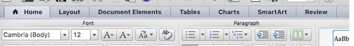Submarino 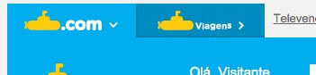
Chrome 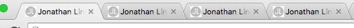
Breadcrumb
Traduzido como migalhas de pão, é um elemento de design que mostra o caminho percorrido pelo usuário até a página atual.Exemplos:
Amazon 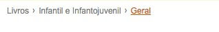Contos Peregrinos 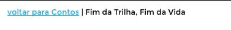
Americanas 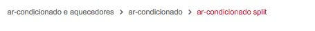
Versos de Outubro 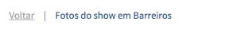
Botões
Exemplos:
Submarino 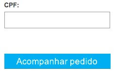Amazon
Globo
Amazon 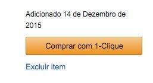
Globo 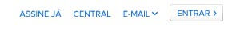
Checkbox
Exemplos:
OSx 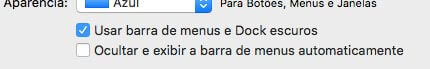Amazon 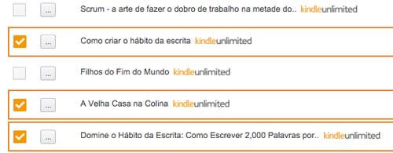
Chrome 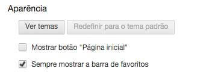
Dropdown
Elemento com sub-níveis, muito utilizado em menus.Exemplos:
Sublime Text 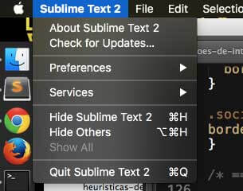Sublime Text 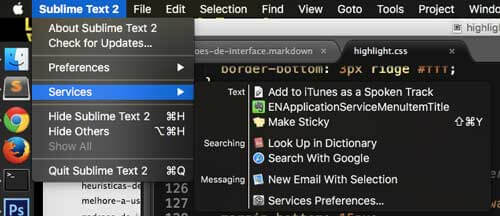
Droplist
Elementos agrupados em forma de lista para seleção de um único item.Exemplos:
Word 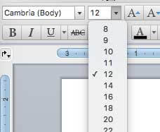OSx 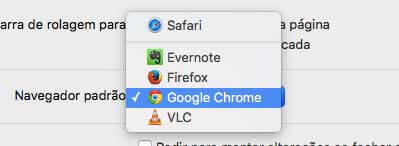
Links
Exemplos:
Mercado Livre 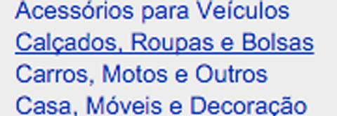Amazon 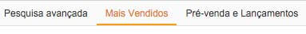
Blog de AI 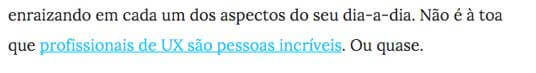
Radio Button
Exemplos:
Chrome 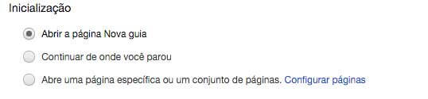OSx 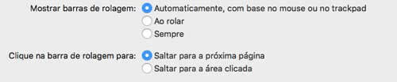
Ponto de partida pra inovação
Cuidado ao confundir padrões com design antigo e ultrapassado. Conhecer padrões é extremamente necessário até para que você possa quebrá-los e estabelecer novos. Padrões não são estáticos. Cuidado quando for fazer essa relação.
Referências
- The Main Tap - Pattern Tap
- Pttrns - Mobile User Interface
- Yahoo Design Pattern Library
- UI-Patterns.com
- Interaction Design Pattern Library
- Elements of Design
[Créditos]
O conteúdo desse artigo foi inspirado roubado numa aula que assisti sobre padrões de interface no sensacional curso de Ux para Webdesigner do professor Luis Felipe Fernandes. Inclusive todas as referências desse artigo vieram de lá. Isso me deu a ideia de reunir todas as outras referências expostas no decorrer do curso e criar um repositório no Github, ficou bem bacana. Deixe seu star lá no Github e seus comentários logo abaixo! Valeu!